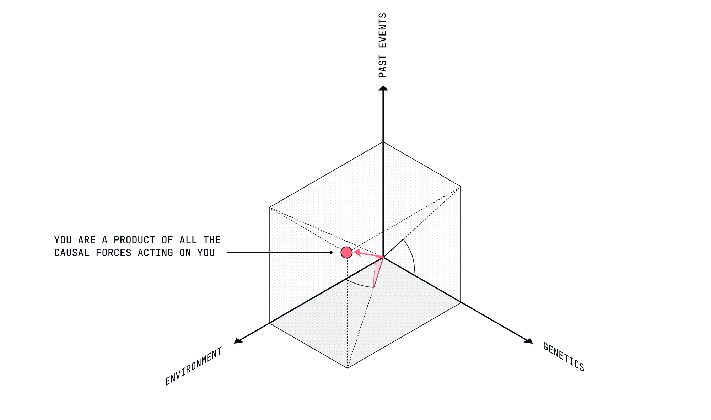
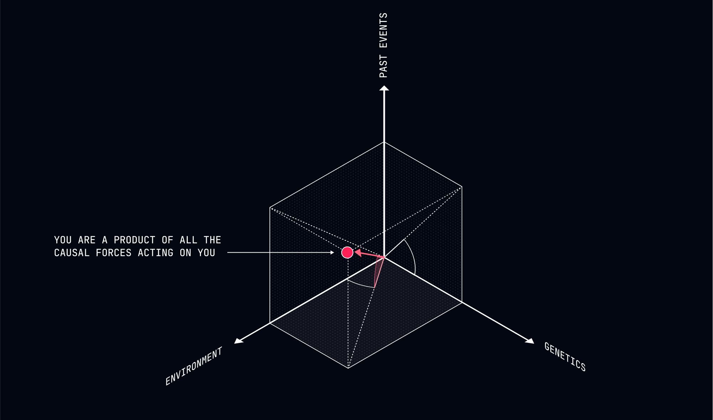

Mapping the Causal Factors
The causes acting on you can give you insight into where they might take you.
The Illusion of Navigation
Welcome to the second module of our journey through deterministic self-improvement. Having established that your choices are predetermined, we now turn to the practical question: how do you navigate a path you don't actually choose?
The conventional approach to decision-making assumes you're a captain steering your ship across an open sea of possibilities. The deterministic reality is quite different. You're more like a leaf in a river, carried by currents you didn't create and can't control. But—and this is the interesting part—you can become aware of these currents and gain insight into where they're taking you.
This isn't choosing your destination. It's recognizing your inevitable trajectory.
Identifying Your Causal Factors
Your future path, like your past one, is determined by specific causal factors. By mapping these factors, you can gain insight into your predetermined direction—not to change it (impossible) but to reduce the cognitive dissonance that comes from believing you're going one way when you're inevitably headed another.


Internal Causal Factors
These are the forces within your predetermined system that push you in specific directions:
-
Genetic Predispositions - Your inherent temperament, cognitive style, and natural abilities create boundaries around your possible paths. The person with high trait neuroticism isn't choosing to worry about the future—their brain chemistry makes certain thought patterns inevitable.
-
Established Neural Pathways - The habits and patterns you've developed over decades aren't choices but well-worn neural highways that your thoughts and behaviors automatically follow. These pathways determine your likely responses to new situations.
-
Psychological Needs - Your needs for security, connection, autonomy, or status weren't chosen but emerged from your particular configuration of genes and experiences. These needs inevitably pull you toward certain environments and away from others.
-
Unconscious Motivations - The drives operating below your conscious awareness exert powerful influence on your apparent "decisions." The person who repeatedly sabotages promising relationships isn't choosing self-sabotage—they're expressing unconscious patterns installed in childhood.
External Causal Factors
These are the forces in your environment that shape your predetermined path:
-
Social Context - The expectations, norms, and influences of your social circle create powerful currents directing your behavior. Your "choices" are largely predictable based on what those around you value and expect.
-
Economic Realities - Your financial circumstances create boundaries around your possible paths. These aren't limitations you choose but concrete realities that inevitably narrow your options.
-
Cultural Programming - The narratives, values, and assumptions of your culture weren't chosen by you but were installed without your awareness or consent. These programs run automatically, directing your behavior toward culturally approved paths.
-
Physical Environment - Your surroundings shape your behavior in ways you rarely notice. The person who "chooses" to exercise more after moving near a park isn't making a free choice—they're responding inevitably to altered environmental cues.
Mapping Your Causal Terrain
To map the factors determining your path, observe yourself with the detached curiosity of a scientist studying an interesting specimen. Notice the patterns and forces that consistently influence your behavior:
1. Track Your Automatic Responses
Pay attention to your immediate, unfiltered reactions to situations. These automatic responses reveal your programming more clearly than your carefully considered "decisions."
When offered a new opportunity, what's your gut reaction? Excitement? Anxiety? Suspicion? These immediate responses weren't chosen but reveal the causal factors operating in your system. The person who automatically feels dread when offered a promotion isn't choosing this response—they're expressing programming installed by past experiences with increased responsibility.
2. Identify Your Environmental Triggers
Notice which environments consistently produce certain behaviors or emotional states. These environmental triggers reveal how external factors inevitably shape your path.
Perhaps you always become argumentative in certain social contexts, productive in specific physical environments, or anxious in particular relationship dynamics. These aren't choices but predictable responses to environmental cues. The person who always becomes confrontational around authority figures isn't choosing this behavior—they're responding automatically to triggers installed by early experiences.
3. Recognize Your Decision Patterns
Examine the patterns in your past "decisions." These patterns reveal the algorithms operating in your system more clearly than any individual choice.
Do you consistently choose security over opportunity? Familiarity over novelty? Immediate gratification over long-term benefits? These aren't random choices but expressions of your particular programming. The person who repeatedly chooses jobs below their capability isn't making free choices—they're expressing an algorithm shaped by past experiences that linked advancement with risk or failure.
4. Notice Your Attention Allocation
Observe where your attention naturally goes when not deliberately directed. Your automatic attention patterns reveal causal factors operating below conscious awareness.
Do you automatically notice threats in your environment? Opportunities for connection? Potential for status enhancement? These attention patterns weren't chosen but emerged from your particular configuration of genes and experiences. The person whose attention is automatically captured by social hierarchies isn't choosing this focus—they're expressing programming installed by environments where status was crucial for survival or success.
Case Study: The Career Transition
Consider Michael, who believes he's "choosing" to leave his corporate job for entrepreneurship. A closer examination reveals the causal factors determining this apparent choice:
Internal Factors:
- His high trait openness to experience (genetic) creates inevitable restlessness in structured environments
- His established neural pathways associate corporate structures with constraint (based on past experiences)
- His psychological need for autonomy (emerged from his particular development) creates tension in hierarchical settings
- His unconscious motivation to prove his capability to a dismissive parent (installed in childhood) drives risk-taking behavior
External Factors:
- His social circle increasingly values entrepreneurship (creating social reinforcement)
- His financial situation allows for temporary income reduction (enabling the transition)
- His cultural context celebrates entrepreneurial narratives (installing programming that equates entrepreneurship with success)
- His physical environment includes a home office (reducing friction for the transition)
Michael experiences this as a choice he's making. In reality, given this particular configuration of causal factors, his transition to entrepreneurship was the only possible outcome. The sensation of choosing is merely his consciousness becoming aware of what was already determined by these factors.
Predicting Your Inevitable Path
Once you've mapped your causal factors, you gain a superpower: the ability to predict your predetermined path with greater accuracy. This isn't choosing your future—it's recognizing the direction you were always going to go.
If your mapping reveals strong internal factors pulling you toward creative expression, powerful social factors pushing you toward conventional achievement, and economic factors constraining your options, you can predict the path that will inevitably emerge from these competing forces.
This prediction doesn't give you control (impossible) but reduces the cognitive dissonance that comes from believing you're headed one way when your causal factors are taking you another. The person who recognizes their inevitable trajectory toward creative work can stop pretending they'll be satisfied with conventional success, even if external pressures temporarily push them in that direction.
Working With Your Causal Factors, Not Against Them
The conventional approach to self-improvement assumes you can override your causal factors through willpower or determination. This is like trying to swim against a powerful current—exhausting and ultimately futile.
The deterministic approach is different. Rather than fighting your causal factors, work with them. If your mapping reveals powerful internal factors pulling you toward variety and novelty, don't try to force yourself into a stable, predictable career path. Instead, recognize your predetermined need for change and find environments that accommodate this inevitability.
This isn't choosing a different path—it's reducing the friction on the path you were always going to take.
The Strange Comfort of Causal Clarity
There's a peculiar relief in recognizing the factors determining your path. When you stop believing you should be able to choose any direction regardless of your causal factors, you can release the exhausting struggle against your predetermined nature.
The person who maps their causal factors and recognizes their inevitable pull toward connection over achievement can stop wasting energy trying to force themselves to prioritize career advancement. The person who recognizes their predetermined need for security can stop berating themselves for not taking risks they were never going to take.
This isn't giving up—it's aligning your self-concept with reality, reducing the wasteful friction that comes from fighting against your inevitable direction.
Next Steps
In our next lesson, "Reframing Uncertainty as Agency," we'll explore how the inherent unpredictability of complex causal systems creates a sensation that feels remarkably like choice. We'll examine how not being able to predict the future, if you squint a bit, looks sort of like free will.
Remember: You didn't choose to read this lesson, and you won't choose whether to apply its insights. Your engagement with these concepts was determined by factors outside your control. But now that these ideas are part of your causal system, they'll inevitably influence your predetermined path—not because you chose them, but because they've become part of what determines you.